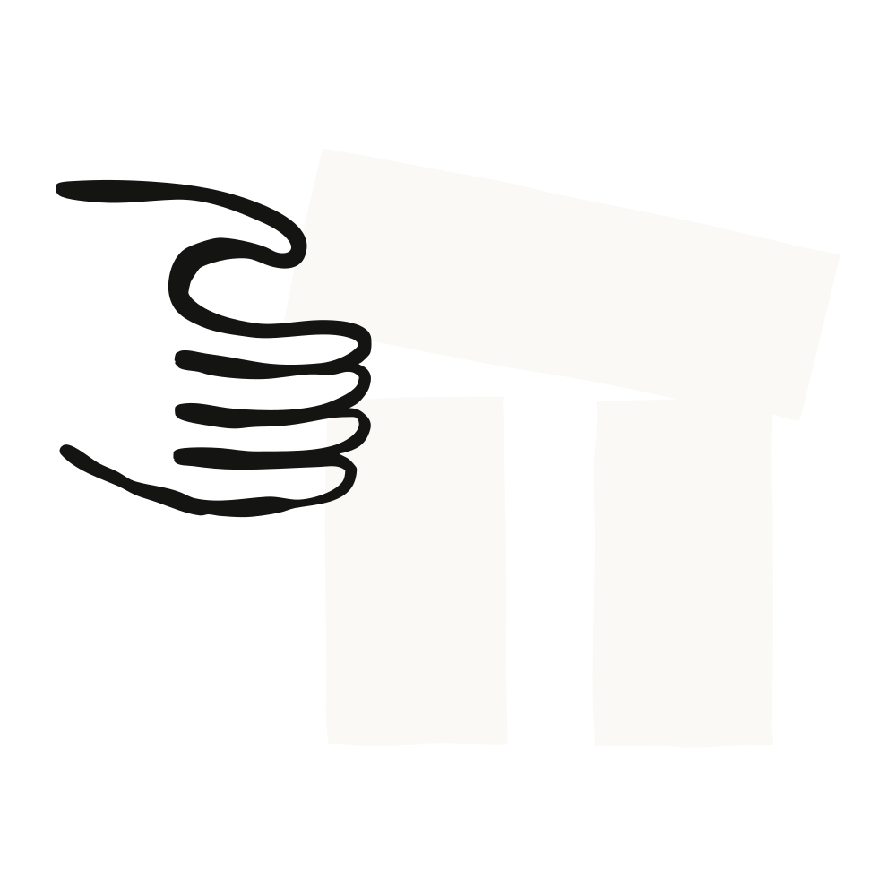
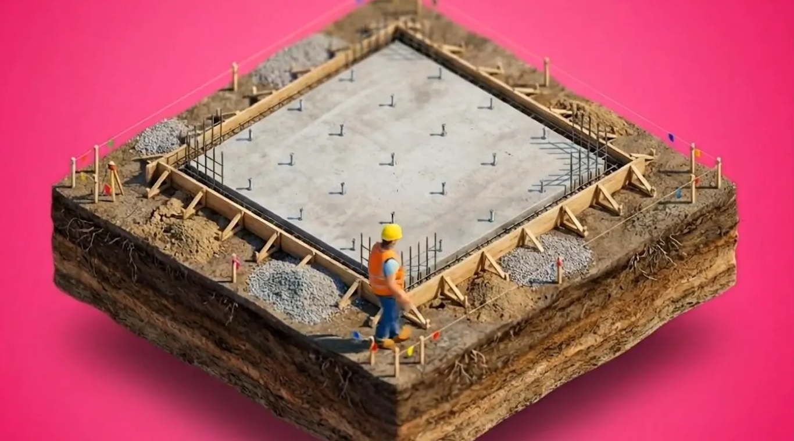
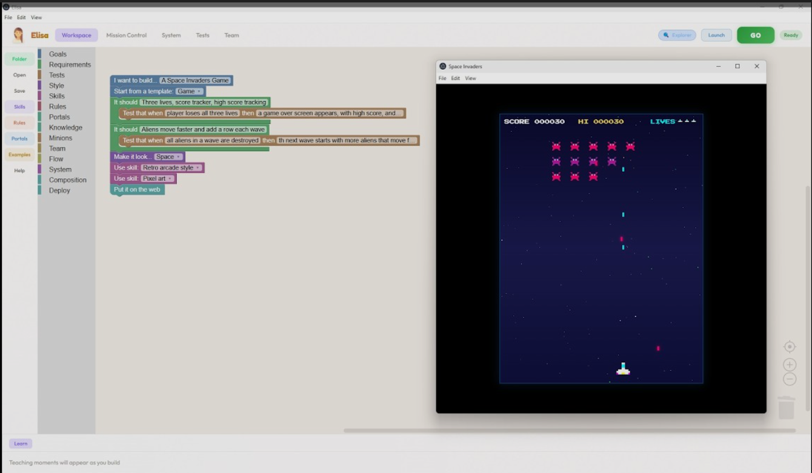
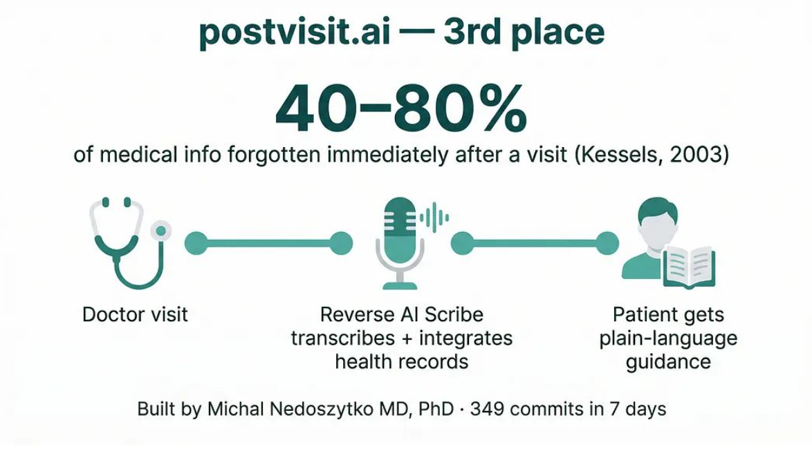
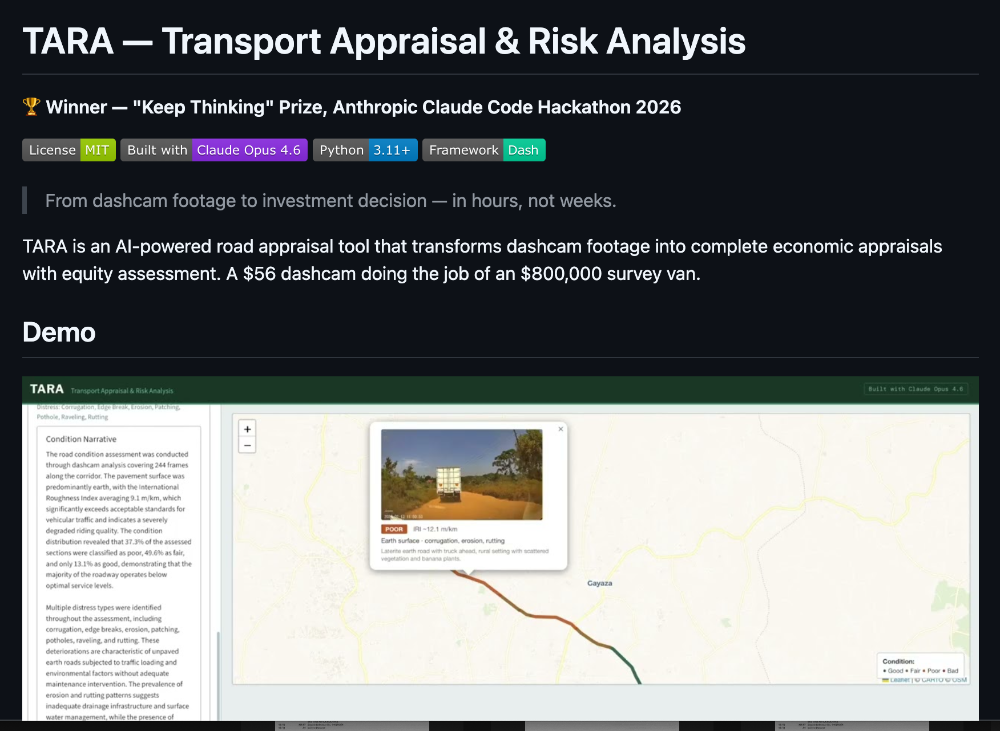

지난주 Anthropic은 가상으로 진행되는 Built with Opus 4.7 Claude Code 해커톤을 발표하며, 최신 Opus 모델로 무언가를 만들어 보도록 커뮤니티를 초대했습니다. Cerebral Valley와 협력해 500명의 참가자를 선정하고, 각자에게 500달러의 API 크레딧과 일주일의 개발 기간을 제공했습니다. 여섯 우승자가 총 10만 달러의 Claude API 크레딧을 나눠 갖습니다.
Opus 4.6 해커톤 우승자들은 다양한 분야의 전문가였습니다 — 개인 상해 전문 변호사, 심장 전문의, 인프라 전문가, 일렉트로닉 음악가, 그리고 소프트웨어 엔지니어. 다섯 중 넷은 직업 개발자가 아니었습니다. 이들의 프로젝트는 주택, 의료, 인프라, 음악, 교육의 과제를 다뤘습니다.

캘리포니아의 주택 허가는 첫 제출에서 90%가 넘는 반려율을 보이며, 평균 6개월의 지연으로 주택 소유주에게 3만 달러의 비용을 안깁니다. 개인 상해 전문 변호사인 Mike Brown은 이 관료적 병목을 풀기 위해 CrossBeam을 만들었습니다.
이 도구를 쓰면 시공자가 설계도와 보정 요구서를 업로드할 수 있습니다. 병렬 서브에이전트들이 문서를 파싱하고, 공간 색인을 만들고, 각 보정 항목에 표적 에이전트를 배정합니다. 20분 안에 시공자는 정확한 실행 계획을 받습니다. 지자체는 허가를 일괄 처리하고 보정 요구서 초안을 자동으로 생성할 수 있습니다.
2029년까지 8,900채의 주택을 허가해야 하지만 2024년에는 120채만 허가한 부에나파크(Buena Park)가 도입을 검토 중입니다. Brown은 이렇게 말했습니다. "캘리포니아 허가 위기의 양쪽을 모두 해결할 수 있다면, 어쩌면 캘리포니아의 주택 위기 자체를 풀 수 있을지도 모릅니다."
Brown은 Claude Code에 프롬프트를 주고 테스트를 생성하게 하는 방식으로 CrossBeam을 만들었습니다. 그는 이렇게 언급했습니다. "저는 코드를 단 한 줄도 쓰지 않았습니다. 코드를 한 줄도 읽지도 않았고요."

Jon McBee는 12살 딸이 중학생 친화적인 인터페이스로 Claude Code에 접근할 수 있도록 Elisa를 만들었습니다. Elisa는 블록 기반 비주얼 IDE로, 사용자가 기본 요소들을 끼워 맞추는 동안 AI가 뒤에서 코드를 작성합니다.
사용자가 비주얼 언어로 명세를 작성하면, 메타 플래너가 그것을 작업 그래프로 분해하고 에이전트들이 실행을 담당합니다. 내장된 교육 엔진이 연령에 맞는 프로그래밍 설명을 띄웁니다.
McBee는 30시간 동안 76번의 커밋, 39,000줄이 넘는 코드, 1,500개 이상의 테스트로 Elisa를 만들었습니다. 그는 이렇게 회고했습니다. "Claude Code는 그 모든 지식을 단 엿새 만에 출시 가능한 제품으로 바꾸도록 도와줬습니다."
교육자들이 교실 활용에 관심을 보였습니다. McBee는 3만 달러의 상금을 교육용 배포 자금으로 쓸 계획입니다. 그는 머지않아 소프트웨어 제작자들이 소스 코드를 직접 다루는 대신 명세와 테스트로 일하게 되리라 봅니다.

20년간 의료 소프트웨어를 만들어 온 브뤼셀 기반 심장 전문의 Michał Nedoszytko는, 벨기에·그리스·폴란드에 배포된 자신의 이전 환자 접수 시스템 Previsit.AI의 짝으로 PostVisit을 만들었습니다.
PostVisit은 진단을 평이한 언어로 설명하고, 진료 기록과 AI 전사본을 분석하며, 의사의 감독 아래 관련 임상 근거를 띄웁니다. 환자는 자기 진료에 대해 더 명확히 이해하고, 의사는 진료와 진료 사이에도 가시성을 유지합니다.
Nedoszytko는 브뤼셀에서 샌프란시스코로 가는 해커톤 로드트립 동안 PostVisit을 개발했습니다. 그는 이렇게 언급했습니다. "의학은 근거에 기반합니다. 건강 기록, 근거, 진료 데이터를 결합하면 환자는 진료 이후에 일어나는 일을 완전히 통제하고 이해하게 됩니다."

우간다는 가용 예산을 넘어서는 막대한 도로 인프라 수요에 직면해 있습니다. 전통적인 타당성 조사는 100만~400만 달러가 들고 9~14개월이 걸리며, 지역사회 영향 평가는 소홀히 다뤄집니다.
우간다 공공사업교통부 출신의 Kyeyune Kazibwe는 이 과정을 바꾸기 위해 TARA를 개발했습니다. 이 도구는 Opus 4.6의 비전 기능을 사용해 노면 상태, 손상 패턴, 그리고 보행자·자전거 이용자·노점 등 도로변 활동을 식별하며, 블랙박스 영상을 완전한 투자 평가서로 바꿉니다.
시스템은 도로를 상태별 구간으로 나누고, 개입 비용을 자동으로 채우며, NPV·현금흐름 전망·민감도 분석이 포함된 완전한 경제 평가서를 생성합니다. 또한 누가 투자의 수혜를 받는지 평가하는 형평성 점수를 산출합니다.
해커톤을 위해 Kazibwe는 건설 중인 우간다 키라-마투가(Kira-Matugga) 도로의 실제 블랙박스 영상을 업로드했습니다. 그는 이렇게 설명했습니다. "클릭 한 번으로 완전한 PDF 보고서가 생성됩니다 — 상태 평가, 경제 분석, 형평성 결과, 민감도 해석이 모두 한 문서에. 이 과정은 예전엔 몇 주가 걸렸습니다. TARA는 다섯 시간 만에 해냅니다."
Asep Bagja Priandana는 Claude를 라이브 가상 밴드 동료로 바꾸기 위해 Conductr를 만들었습니다. 이 브라우저 기반 MIDI 악기는 당신의 코드 연주를 분석해 드럼·베이스·멜로디·하모니 네 개 트랙을 실시간으로 생성합니다. 사용자는 "펑키하게 만들어 줘"나 "절정으로 몰아가 줘" 같은 지시를 입력해 연주 도중 편곡을 바꿀 수 있습니다.
기술적 난관은 음악을 끊기지 않게 유지하는 것이었습니다. WebAssembly로 컴파일된 C 엔진이 15밀리초마다 음표를 생성해, AI의 결정이 흐름을 끊지 않고 편곡을 다시 빚어내게 합니다. Priandana의 표현대로, 지연 시간은 "음악적으로 보이지 않는(musically invisible)" 수준으로 남습니다.
Conductr는 약 4,800줄의 JavaScript와 WebAssembly로 돌아갑니다 — 음악가와 함께 실시간으로 듣고, 생각하고, 연주하는 악기치고는 군더더기 없는 코드베이스입니다.
Claude 커뮤니티 프로그램(밋업과 해커톤 포함)에 대해 알아보세요.